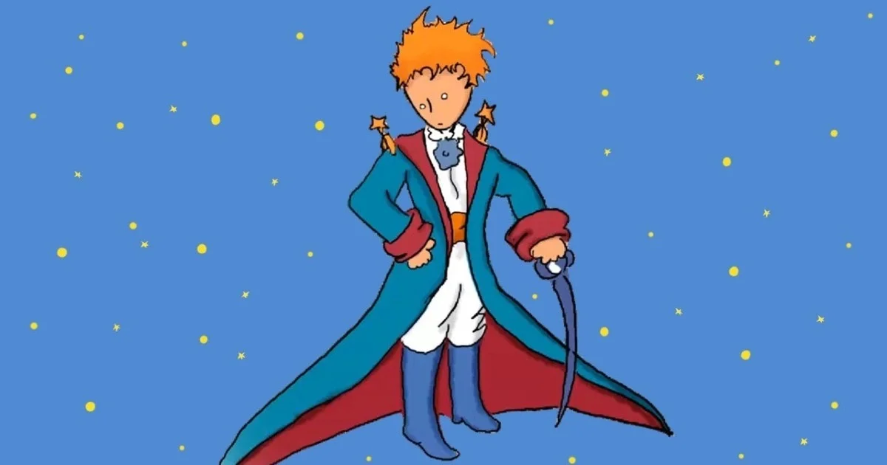

The little Prince
Autor: Antoine de Saint-Exupéry
This page was made by Anahi
The narrator begins with a discussion of the nature of adults and their inability to perceive "important things". As a test to determine if an adult is as enlightened as a child, he shows them a picture depicting a boa constrictor that has eaten an elephant. Adults always reply that the image represents a hat, so you know to only talk to them about "reasonable" things, rather than fanciful ones.
The narrator becomes an airplane pilot, and one day his plane crashes in the Sahara desert, far from civilization. The narrator has eight days' supply of water and must fix his plane. Here, he is unexpectedly greeted by a boy nicknamed "the little prince". The prince has golden hair, an adorable laugh and will repeat questions until they are answered.
The prince asks the narrator to draw a sheep. The narrator first shows him the image of the elephant inside the snake, which, to the narrator's surprise, the prince correctly interprets. After three unsuccessful attempts to draw a sheep, the frustrated narrator draws a simple box and claims that the sheep is inside. The prince exclaims that this was exactly the drawing he wanted.
Over the course of eight days in the desert, while the narrator tries to repair his plane, the prince tells the story of his life. He begins by describing his tiny home planet: indeed, a house-sized asteroid known as "B 612" on Earth. The asteroid's most prominent features are three tiny volcanoes (two active and one dormant or extinct) and a variety of plants.
The prince describes his early days cleaning up the volcanoes and removing the unwanted seeds and twigs that infest the soil of his planet; in particular, uprooting baobab trees that are constantly poised to invade the surface. If baobabs are not removed by the time they are recognized, their roots can have a catastrophic effect on the tiny planet. Therefore, the prince wants a sheep to eat the undesirable plants, but he is worried that it will also eat plants with thorns.
The prince tells of his love for a vain and foolish rose that began to grow on the surface of the asteroid some time ago. The rose is given to pretense, exaggerating ailments to attract attention and be cared for by the prince. The prince says that he fed the rose and cared for it, making a screen and a glass globe to protect it from the cold and wind, water it, and keep the caterpillars away.
Although the prince fell in love with the rose, he also began to feel that she was taking advantage of him, and decided to leave the planet to explore the rest of the universe. After their goodbyes, the rose apologizes for not showing that she loved him. She wishes him well and rejects his wish to leave her in the glass globe, saying that she will protect herself. The prince laments that he did not understand how to love his rose while he was with her and should have listened to her kind actions, instead of her empty words.
Since then, the prince has visited six other planets, each of which was inhabited by a single narrow-minded and irrational adult, each destined to criticize an element of society. They include:
A king without subjects, who only gives orders that can be followed, such as commanding the sun to set at sunset.
A narcissistic man who only wants the praise that comes from admiration and being the most admirable person on his uninhabited planet.
A drunk who drinks to forget the shame of drinking.
A businessman who is blind to the beauty of the stars and instead endlessly counts and catalogs them in order to "own" them all (criticizing materialism).
A lamplighter on such a small planet, a full day lasts one minute. He wastes his life blindly following orders to turn the streetlight off and on every 30 seconds to match the day and night of his planet.
An elderly geographer who has never been anywhere, nor seen anything he records, providing a caricature of specialization in the contemporary world.
It is the geographer who tells the prince that his rose is an ephemeral being, which is not known, and recommends that the prince's next visit to planet Earth. The visit to Earth begins with a deeply pessimistic assessment of humanity. The six absurd people the prince encountered earlier comprise, according to the narrator, almost the entire adult world.
